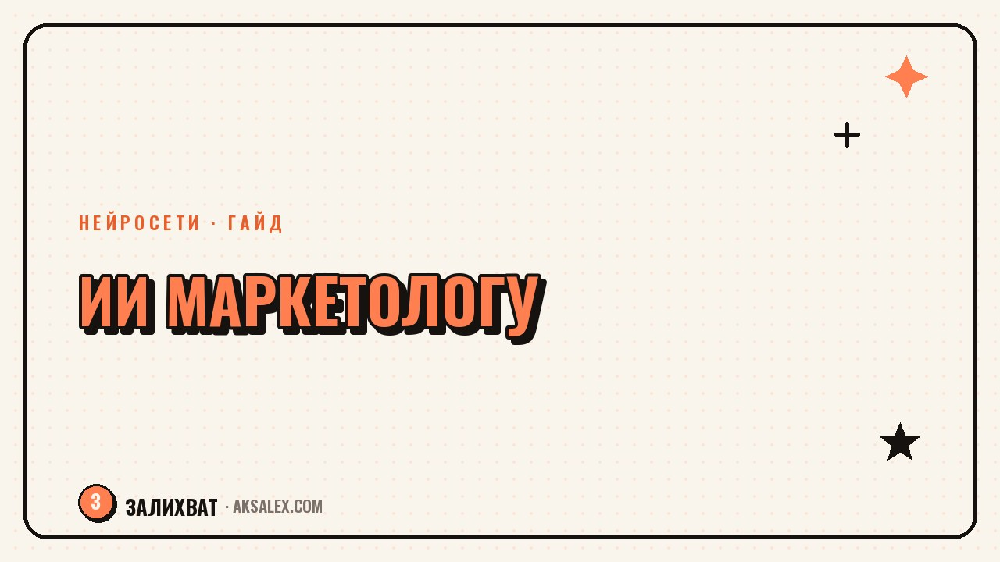

Нейросети для маркетолога: связки под задачи

У маркетолога задачи разные каждый день: сегодня нужно собрать гипотезы для теста, завтра - разобрать отчёт по кампании, послезавтра - написать десять вариантов заголовка. Универсального инструмента под всё это нет, зато есть рабочие связки нейросетей под конкретные задачи. Разберём несколько таких связок и честно скажем, где итог всё равно проверяет человек.
Почему одной нейросети маркетологу мало
Задачи маркетолога сильно различаются по типу мышления: тексты требуют creativity и чувства аудитории, анализ данных - точности и структуры, а стратегия - широкого контекста рынка. Один и тот же чат-бот справляется с этим неровно: где-то выдаёт сильный текст, а где-то путается в цифрах отчёта.
Поэтому практичнее держать не один универсальный инструмент, а набор связок под типовые задачи: своя связка для текстов, своя для анализа, своя для мозгового штурма гипотез. Дальше - примеры таких связок, которые реально экономят время в текущей работе.
Три типа задач маркетолога и подход к каждой
- Тексты и креативы - нужен черновик и много вариантов на выбор
- Анализ данных и отчётов - нужна структура и сжатие больших массивов
- Гипотезы и стратегия - нужен собеседник для мозгового штурма
Связка для текстов: от брифа до десяти вариантов заголовка
Для текстовых задач связка простая: бриф с деталями продукта и аудитории, затем просьба выдать несколько вариантов заголовка или текста разной длины и тона. Ключевое здесь - не брать первый вариант, а просить именно несколько разных подходов и выбирать вручную, что ближе к голосу бренда.
Как выстроить процесс по шагам
- Опиши продукт, аудиторию и цель текста одним абзацем
- Попроси 5-7 вариантов заголовка или текста с разным тоном
- Отбери 2-3 варианта, которые ближе к голосу бренда
- Дооформи вручную: убери шаблонные обороты, добавь конкретику своего продукта
Раньше на десять вариантов заголовка уходил час мозгового штурма впустую. Сейчас нейросеть даёт черновой набор за минуту, а я трачу время на отбор и доработку, а не на пустой лист.
Связка для анализа: конкуренты, отчёты и большие таблицы
Для анализа связка другая: сначала собираешь сырые данные - выгрузку из рекламного кабинета, скриншоты сайтов конкурентов, текст отчёта - а потом просишь нейросеть структурировать это в понятную сводку с выводами. Она хорошо сжимает большой объём текста и таблиц в короткие тезисы.
Слабое место здесь - точность цифр. Нейросеть может неверно посчитать процент или перепутать колонки при работе с большой таблицей, поэтому итоговые цифры, которые пойдут в презентацию руководству, стоит перепроверять вручную, а не доверять на слово сводке.
- Сжатие длинного отчёта в короткую сводку с ключевыми выводами
- Структурирование скриншотов сайтов конкурентов в сравнительную таблицу
- Поиск закономерностей в тексте отзывов или комментариев аудитории
Связка для гипотез: мозговой штурм перед тестами
Перед запуском теста полезно накидать больше гипотез, чем обычно приходит в голову с ходу. Нейросеть хорошо работает как собеседник для расширения списка идей: ты даёшь контекст задачи и ограничения, а она предлагает варианты, из которых часть точно не подойдёт, зато часть окажется рабочей зацепкой.
Важно относиться к этому списку как к сырому материалу, а не готовому плану. Приоритизацию гипотез по ожидаемому эффекту и ресурсам делает маркетолог, исходя из знания своего рынка и бюджета, а не сама нейросеть.
Что можно доверить нейросети, а что нет
| Задача | Можно доверить нейросети | Остаётся за маркетологом |
|---|---|---|
| Варианты заголовков и текстов | Да, как черновой набор | Отбор и финальная редактура |
| Сжатие отчёта в сводку | Да, для быстрого обзора | Проверка ключевых цифр |
| Список гипотез для тестов | Да, для расширения идей | Приоритизация под бюджет и рынок |
| Расчёт бюджета кампании | Нет, только черновая прикидка | Финальные цифры и утверждение |
| Стратегия позиционирования | Нет | Полностью решение команды |
Как собрать свой набор связок: пошаговый план
Не нужно сразу строить сложную систему из десяти инструментов. Начни с той задачи, которая занимает больше всего времени именно у тебя, и собери под неё одну простую связку - шаблон брифа плюс запрос к нейросети.
Практический план на месяц
- Неделя 1: собери шаблон брифа для текстовых задач и опробуй на реальном тексте
- Неделя 2: попробуй связку для анализа на одном отчёте, сравни с ручной работой
- Неделя 3: подключи мозговой штурм гипотез перед следующим тестом
- Неделя 4: оставь в работе только те связки, которые дали реальную экономию времени
Частые вопросы
Какая нейросеть лучше всего подходит маркетологу?
Универсального ответа нет - результат сильнее зависит от связки бриф плюс запрос, чем от конкретного сервиса. Проще собрать свои шаблоны под текстовые, аналитические и стратегические задачи и проверить их на реальной работе.
Можно ли доверять нейросети расчёт бюджета рекламной кампании?
Только как черновую прикидку для первой оценки. Финальные цифры бюджета и распределение по каналам должен утвердить маркетолог с учётом реальных ограничений компании.
Как нейросеть помогает с анализом конкурентов?
Она хорошо сжимает большой объём сырых данных - скриншотов, текстов, таблиц - в структурированную сводку с выводами. Но итоговые цифры и факты из такой сводки стоит перепроверять вручную перед тем, как показывать руководству.
Сколько вариантов текста стоит просить у нейросети за раз?
Обычно достаточно 5-7 вариантов с разным тоном и длиной, чтобы было из чего выбирать. Меньше - мало пространства для выбора, больше - тратишь время на просмотр однотипных повторов.
С чего начать маркетологу, который раньше не использовал нейросети?
С одной задачи, которая отнимает больше всего рабочего времени - чаще всего это тексты или разбор отчётов. Собрать под неё простой шаблон запроса и проверить на реальной работе в течение пары недель.
Раз тема оказалась полезной, вот что почитать следующим. Что нейросети уже умеют в подборе персонала, а что решает только рекрутёр.
Читать статью →а не вручную